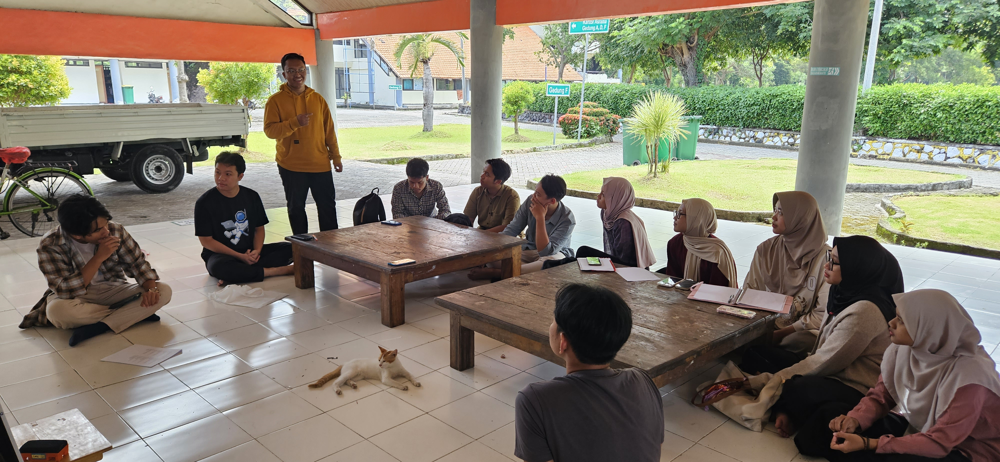
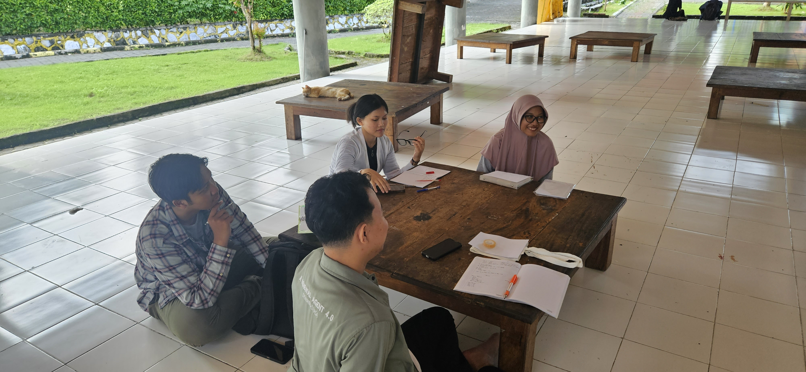
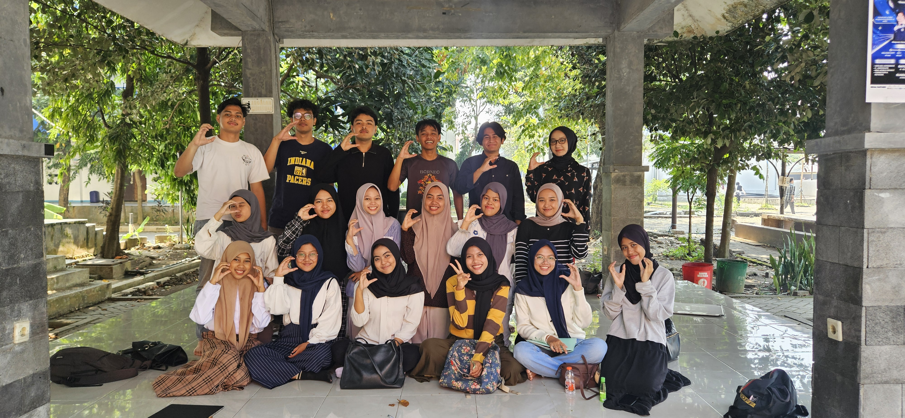
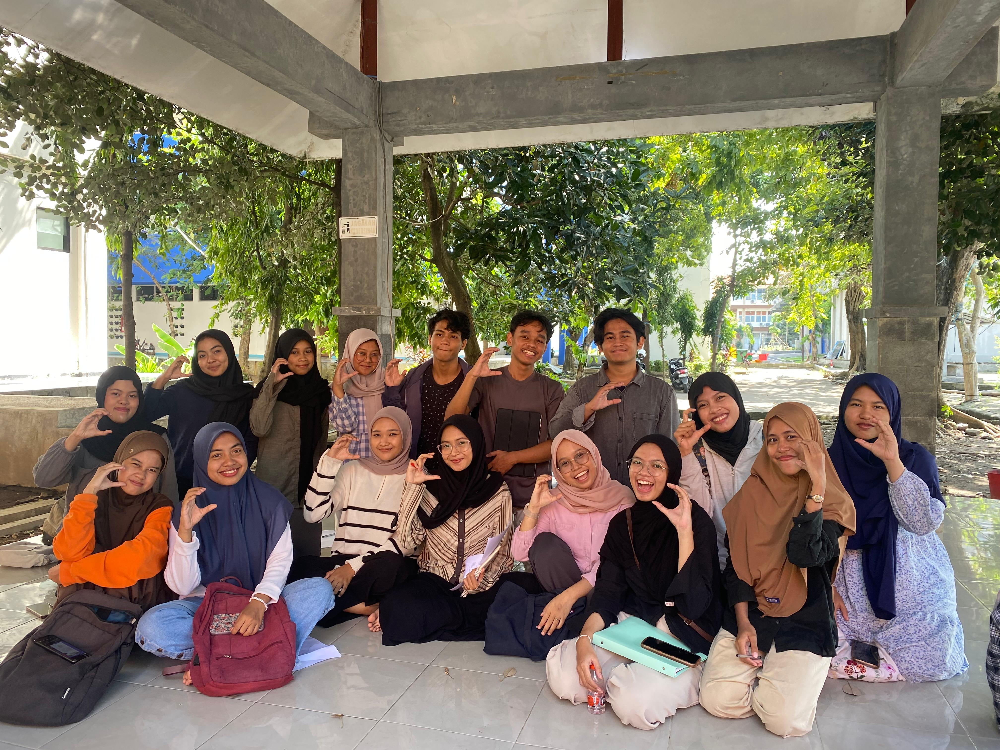
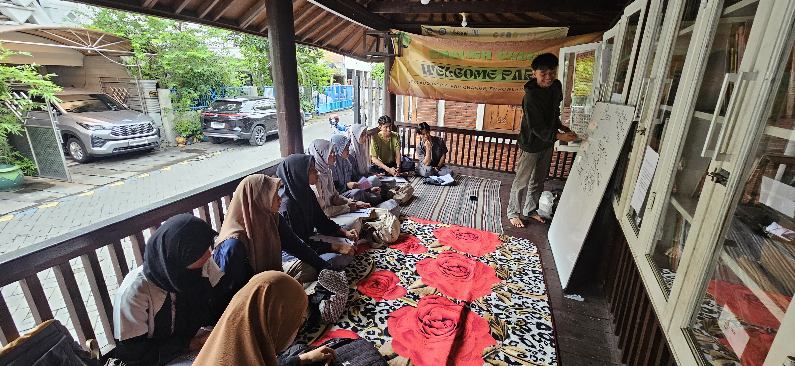
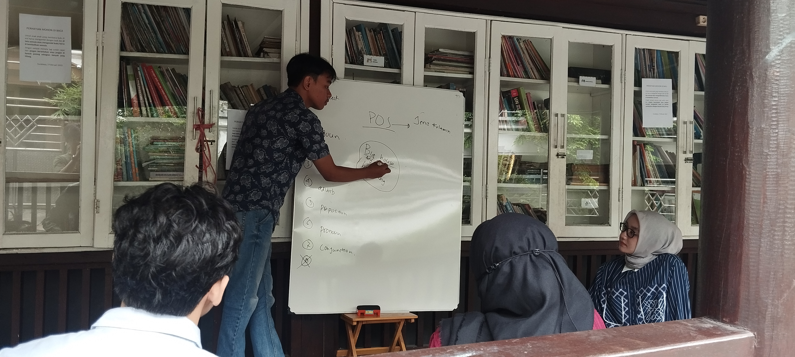

Keseruan Chapter Kampus
English Check hadir langsung di kampusmu! Kami mengadakan kopdar mingguan, latihan debat, dan persiapan beasiswa secara offline.





↔ Geser foto untuk melihat lainnya
ITS Surabaya
📍 Asrama ITS
Diskusi seru membahas teknologi terkini, belajar santai di selasar, dan persiapan presentasi jurnal internasional.
Sedang dikembangkan 🚧



↔ Geser foto untuk melihat lainnya
UPN Veteran Jatim
📍 FASILKOM
Latihan public speaking di area terbuka dengan topik hangat seputar sosial dan bisnis.
Daftar Sekarang


↔ Geser foto untuk melihat lainnya
UNAIR
📍 Kampus C
Sesi khusus pembahasan studi kasus medis dan latihan debat kompetitif yang intensif.
Sedang dikembangkan 🚧